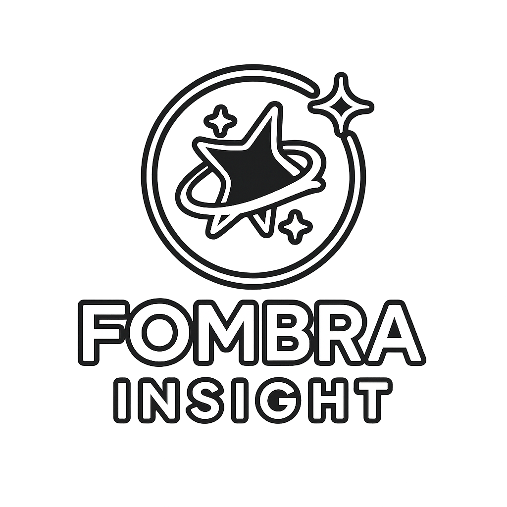

<!DOCTYPE html>
<html lang="en">
<head>
  <meta charset="UTF-8" />
  <meta name="viewport" content="width=device-width, initial-scale=1.0"/>
  <title>Slideshow Test</title>
  <link rel="stylesheet" href="style.css" />
</head>
<body>
 <div id="bg-slideshow">
    <div class="bg-layer" id="bg1"></div>
    <div class="bg-layer" id="bg2"></div>
  </div>

  <script src="script.js"></script>
</body>
</html>

  <!-- Background Slideshow -->
  <div class="background-slideshow">
    <div class="slide" style="background-image: url('assets/images/slide1.jpeg');"></div>
    <div class="slide" style="background-image: url('assets/images/slide2.jpeg');"></div>
    <div class="slide" style="background-image: url('assets/images/slide3.jpeg');"></div>
    <div class="slide" style="background-image: url('assets/images/slide4.jpeg');"></div>
    <div class="slide" style="background-image: url('assets/images/slide5.jpeg');"></div>
  </div>

  <!-- Header -->
  <header>
    <div class="header-container">
      <div class="logo">Fombra Insight</div>
      <nav>
        <a href="#why-us">Why Us</a>
        <a href="#about-founder">About the Founder</a>
        <a href="#services">Services</a>
        <a href="#mission">Mission</a>
        <a href="#contact">Contact</a>
      </nav>
    </div>
  </header>

 <section class="hero-logo-overlay">
  <div class="hero-logo-content">
    
    <p class="hero-tagline">equity-driven educational technology consulting</p>
  </div>
</section>

 <section id="why-us" style="padding: 60px 20px; background-color: rgba(255, 255, 255, 0.8);">
  <div style="max-width: 800px; margin: 0 auto;">
    <h2>Why Us?</h2>
    <p>
      Unlike other consulting services, we are here to ignite passion and strategy behind your work – we are not here to follow trends. With the current rise of artificial intelligence, startups everywhere are looking for opportunities to capitalize, while schools are struggling to adapt and keep pace. That’s where we come in.
    </p>
    <p>
      As mentioned in our services page, we specialize in identifying gaps that other people or AI systems may overlook — especially when it comes to inclusion, equity, and real-world implementation. Since the industries of education and technology are evolving so quickly, it can be difficult to keep up with advancements while maintaining a grounded perspective on how said advancements are actually supposed to benefit people.
    </p>
    <p>
      Our insight will provide you with a well-rounded and hyper-aware strategy for improvement in this sector. Through each package, you will receive dedicated analyses of your product(s) and/or programming, contextual stakeholder input, and annual blueprints for expansion that prioritize both innovation and human-centered design.
    </p>
    <p>
      Team members at Fombra Insight have experience within both low-income and underfunded public institutions, and private Ivy League institutions. This gives us a wide lens on the challenges and privileges that shape educational success.
    </p>
    <p>
      From his classes at Columbia University, founder Sidney Weaver III has extensive experience within political analysis, public speaking, scientific inquiry, and research design. He has also worked closely with various district superintendents, startup founders, teachers, and business executives to ensure that strategic insights are not only theoretically useful, but also practically useful across a variety of educational contexts.
    </p>
  </div>
</section>
  
 <!-- About The Founder Section -->
<section id="about-founder" style="padding: 60px 20px; background-color: #ffffff;">
  <div style="max-width: 800px; margin: 0 auto;">
    <h2 style="font-size: 2em; margin-bottom: 20px;">About The Founder</h2>
    <p style="line-height: 1.7; font-size: 1.1em;">
      Sidney Weaver III is a current senior at Columbia University studying political science. He is originally from Council Bluffs, Iowa. He was raised by a single mother who had to overcome drug addictions, and they lived in poverty together. Looking forward, he decided to pursue a career pathway that would not only offer financial success, but one that would be emotionally enriching by helping solve the world’s greatest problems and improving opportunities for all.
    </p>
    <p style="line-height: 1.7; font-size: 1.1em;">
      Today, his compassion and work ethic have distinguished him as a leader within the entrepreneurial field, and he has utilized his skills in public speaking and strategic planning to help organizations like Boys & Girls Club and ONETrack International. In his free time, he likes to work on personal projects, research thought-provoking topics, explore unique locations, go for hikes, and powerlift.
    </p>
    <p style="line-height: 1.7; font-size: 1.1em;">
      As a member of Columbia University Barbell Club, he holds state records in powerlifting and is an Ivy League champion in the men’s 83kg class.
    </p>
  </div>
</section>

  <!-- Services Section -->
  <section id="services" style="padding: 40px 20px; background-color: #ffffff;">
  <div style="max-width: 900px; margin: auto;">
    <h2 style="font-size: 2em; margin-bottom: 20px;">Services</h2>
    <p style="font-size: 1.1em; line-height: 1.6;">
      We provide tactical, context-sensitive consulting services to school districts, educational technology startups, and any businesses that seek to serve the greater good. With a foundation based on improving equity, we specialize in the application of social strategy behind your products and curriculum. It is our mission to ensure that all organizations are able to meet the diverse needs of students and clients within a world that is rapidly evolving. For many people, the simple expansion of opportunities by businesses and educational institutions can be life-changing.
    </p>

    <h3 style="margin-top: 40px; font-size: 1.5em;">Package 1</h3>
    <ul style="list-style-type: none; padding-left: 0;">
      <li style="margin-bottom: 20px;">
        <strong>Needs Assessment:</strong><br>
        Client call focused on understanding organization, goals, audience, and pain points. <br>
        <em>You receive:</em> Summary of organizational points, and initial insights/suggestions.
      </li>

      <li style="margin-bottom: 20px;">
        <strong>Contextual Insight Briefing:</strong><br>
        Contextual research is conducted regarding the following: what has worked for similar scenarios, identification of relevant gaps in access and inclusion, and case studies. <br>
        <em>You receive:</em> 3-5 page written Word/Doc sheet with extensive research regarding your organization’s goals and respective pain points.
      </li>

      <li style="margin-bottom: 20px;">
        <strong>AI/Tech Analysis:</strong><br>
        Evaluation of your current or potential use of educational technology and AI tools. <br>
        <em>You receive:</em> Recommendations on tools that align with your mission, accessibility needs, and capacity, plus analysis of potential risks and benefits.
      </li>

      <li style="margin-bottom: 20px;">
        <strong>Stakeholder Interviews:</strong><br>
        Fombra conducts a series of structured conversations with selected educators, leaders, or community members. <br>
        <em>You receive:</em> Summary of themes, values, and tensions that shape current practices or block innovation within the context of your goals.
      </li>

      <li style="margin-bottom: 20px;">
        <strong>Strategy Consultation:</strong><br>
        Client call focused on identifying realistic, mission-aligned next steps. <br>
        <em>You receive:</em> Verbal and written guidance to help align goals with tools, timelines, and people — designed for sustainable implementation.
      </li>

      <li style="margin-bottom: 20px;">
        <strong>Blueprint Creation:</strong><br>
        Customized 1–2 page roadmap tailored to your organization’s needs. <br>
        <em>You receive:</em> A clear, actionable strategy organized into short-term and long-term steps, with notes on capacity, equity, and impact potential.
      </li>

      <li style="margin-bottom: 20px;">
        <strong>Ongoing Application Analysis:</strong><br>
        Continual review of how your chosen strategies and tools are working in practice. <br>
        <em>You receive:</em> Light check-ins and written insights on what’s working, what’s not, and suggested course corrections.
      </li>
    </ul>

    <p style="font-style: italic; font-size: 1.1em;">Package Price: Varies depending on financial need.</p>
  </div>
</section>

  <!-- Mission Section -->
<section id="mission">
  <h2>Our Mission</h2>
  <p>
    Today, the concept of hard work has been one-sided under many circumstances. To some, it has become a grindset, and has been reduced to a one-size-fits-all narrative. It celebrates hustle without always recognizing that not everyone starts at the same place. This narrative around hard work tends to highlight only one kind of effort — those who have opportunities around them to succeed, and have seized them. I believe hard work is a virtue that should be respected by everyone, regardless of background or circumstance. The reality, though, is that those with fewer resources but an equivalent (if not greater) work ethic almost always go unseen.
  </p>
  <p>
    Then, some outliers who have achieved massive successes are spotlighted to prove that systems are fair, but these success stories do not account for all of those in unfortunate circumstances that are still lost in the dark. We hear phrases like "pull yourself up by your bootstraps" used as if they prove our systems are equally applicable to all backgrounds; as if conventional success is only about individual effort. But not everything is possible when thousands of bright individuals are not given the same resources and opportunities as others to achieve their dreams.
  </p>
  <p>
    For generations, many communities in our world have faced barriers that weren’t always about individual choices, but about policies that shaped opportunity, such as where people could live, how schools were funded, or what kind of jobs were available. Now, every day, brilliant individuals are forced to work multiple jobs to support their families. Brilliant individuals are born into poverty-stricken and zoned neighborhoods where lackluster funds and lackluster belief are the norm. Brilliant individuals suffer from the flawed systems around us that have perpetuated fixed mindsets and the deaths of magnificent aspirations.
  </p>
  <p>
    Still, I believe in more than the traditional idea of work ethic — not the myth of meritocracy, but the steady, passionate effort to create possibility where none exists. I believe in a soul-driven work ethic. It is the kind of work that doesn’t seek validation. It lives in the shadows of underfunded schools, in the 2 a.m. shifts, and in the sacrifices of single parents and overlooked talent. It is in the hands of people who dedicate all their free time, despite exhaustion, to perfecting a skill or a pursuit they love, even when the path forward is uncertain.
  </p>
  <p>
    It is in the determination of those living through war and displacement, who continue striving for a better life not just for themselves, but for their families and communities — often at unimaginable cost. It is in the resistance of those who had to attend high school where others told them they could not accomplish anything great, yet they refuse to listen. It is in the perseverance of many minority and immigrant families who were not able to collect nearly as much generational wealth as their counterparts, but still push for a better life and encourage their children to believe in the impossible.
    It is in the hands of those dealing with addiction, poverty, abuse, and loss, who have worked harder than ever to overcome their setbacks, even when the resources and opportunities around them have failed all of their loved ones. They carry the weight of personal trauma and generational hurt, yet still find the strength to show up, try again, and believe in something better.
  </p>
  <p>
    The emotions that people face in these types of situations are unparalleled, henceforth the concept of work ethic should not be politicized to shame people for struggling, and it should not be a tool to prove that our societal systems provide an equal playing field if people put forth significant effort. It should be a light in the dark that unites all the hard workers of the world — a belief that even when systems and resources fail us, we do not have to fail each other. We do not have to stop fighting for what we believe in. We do not have to continue the cycles of instability that have affected our lineages. We do not have to disappear quietly into the night just because we were born in its shadows.
  </p>
  <p>
    Hard workers of all backgrounds deserve the same opportunities, and more communities deserve access to rich resources that help them recognize their worth, potential, and purpose.
  </p>
  <p>
    This personal philosophy on the two faces of hard work is why I founded Fombra Insight. I believe in the power of education and knowledge to combat harmful cycles and establish extended opportunities for all communities so that no student is left behind.
  </p>
  <p>
    Our team utilizes extensive experience within various educational settings and tech organizations to help you determine the optimal route for reaching all students and clients wholeheartedly. By leveraging educational technology, programming, and curricula to fit the personalized needs of diverse populations, more students will have a better foundation to recognize their interests and pursue passionate, impactful, and stable careers.
  </p>
  <p>
    Furthermore, startup founders, school district leaders, and tech industries will garner massive success within the greater field of education, and their impacts will run deep within the lives of future generations.
  </p>

  <p><em>— Sidney Weaver III</em></p>
</section>
  <!-- Contact Section -->
  <section id="contact">
    <h2>Contact</h2>
    <p>Email: sgw2136@columbia.edu </p>
    <p>Telephone: +1 (712) 524-4029 </p>
    <p>
  <a href="https://www.linkedin.com/in/sidney-weaver-iii-952933236/" target="_blank" style="text-decoration: none; color: #0A66C2;">
    <i class="fab fa-linkedin" style="margin-right: 8px;"></i>Connect with me on LinkedIn
  </a>
</p>
  </section>
<footer style="text-align:center; padding:20px; font-size:14px; color:#666;">
    <p>&copy; 2025 Fombra Insight. All rights reserved.</p>
    <p>
      <a href="privacy.html" style="color:#0066cc; text-decoration:none; margin-right:15px;">Privacy Policy</a> | 
      <a href="terms.html" style="color:#0066cc; text-decoration:none; margin-left:15px;">Terms of Use</a>
    </p>
  </footer>

<script src="script.js"></script>
</body>
</html>
